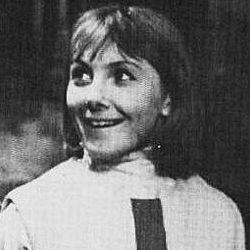

| Home | The Doctors | The Villains | |
|
|||
|
Vicki is a fictional character played by Maureen O'Brien in the long-running British science fiction television series Doctor Who. An orphan from the 25th century, she was a companion of the First Doctor and a regular in the programme in Seasons 2 and 3 in 1965. Her last name was never revealed during the series. Vicki appeared in 9 stories (38 episodes). Vicki first appears in the serial The Rescue (1965), a survivor of a spaceship crash on the planet Dido. She and fellow survivor Bennett were menaced by the monstrous Koquillion when she meets the Doctor (William Hartnell) and his companions Ian (William Russell) and Barbara (Jacqueline Hill). They discover that Koquillion is actually Bennett, who had killed the crew of the spaceship, including Vicki's father. Still coping with his recent parting from his granddaughter Susan at the end of The Dalek Invasion of Earth, the Doctor invites the teenage girl to join the TARDIS crew.
|